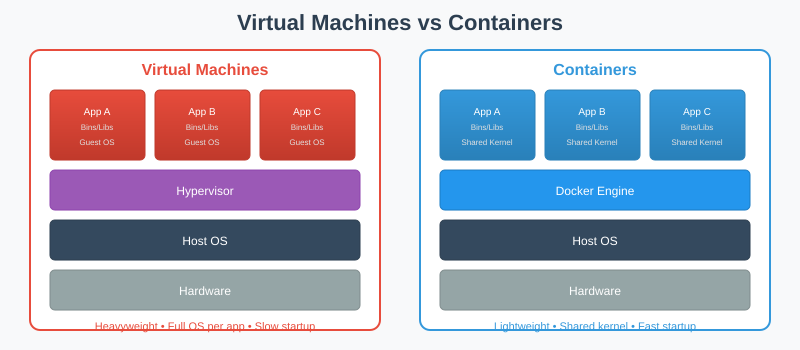
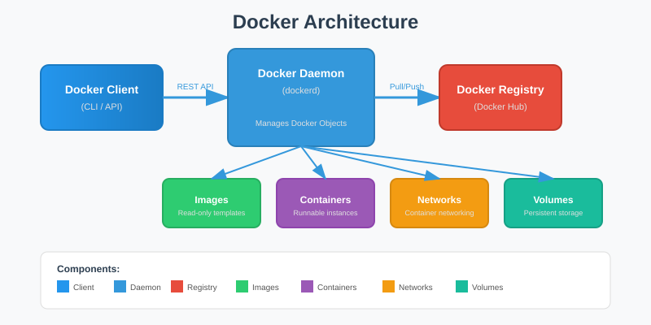
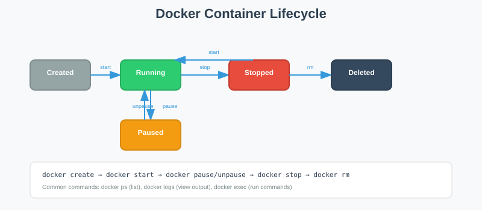

Container Technology for Computer Science
KTU - Computer Science
"A container is a standard unit of software that packages up code and all its dependencies so the application runs quickly and reliably from one computing environment to another."
- Docker Documentation

| Benefit | Description |
|---|---|
| Speed | Start in seconds, no OS boot required |
| Size | MBs vs GBs for VMs |
| Portability | Run anywhere: laptop, server, cloud |
| Consistency | Same environment in dev, test, prod |
| Isolation | Apps don't interfere with each other |
| Efficiency | Higher density: more apps per server |

| Component | Description |
|---|---|
| Docker Client | CLI tool that sends commands to daemon |
| Docker Daemon | Background service managing Docker objects |
| Docker Registry | Storage for Docker images (Docker Hub) |
| Image | Read-only template for creating containers |
| Container | Runnable instance of an image |

| Tool | Purpose |
|---|---|
| Docker Desktop | GUI for managing containers on Mac/Windows |
| Docker Hub | Cloud registry for sharing images |
| Docker Compose | Multi-container app definition |
| Docker Swarm | Container orchestration (built-in) |
| Docker BuildKit | Enhanced build engine |
| Docker Scout | Security vulnerability scanning |
Companies using Docker report:
| Concept | Command Example |
|---|---|
| Run container | docker run -d nginx |
| List containers | docker ps |
| Stop container | docker stop <id> |
| Remove container | docker rm <id> |
| Pull image | docker pull ubuntu |
| List images | docker images |
Next: Docker Installation on CentOS 9 Stream